# Introduction to Electronics <img class="full-width" src="https://i.pinimg.com/originals/12/6f/ef/126fef3e3b683ac9360100c83b3d781f.jpg" alt=""> --- # Introduction to Electronics ## Overview Morning - DC & AC - Voltage, Current, Resistance - BLINK BLINK: LED + 555 - How to Read a Schematics/Datasheet - Components and their Symbols - The Art of Debugging Circuits Afternoon - From Breadboard to Prototype - Tools - Soldering Tips - Security Tips --- # Introduction to Electronics ## DC & AC - DC: Direct Current/Gleichstrom - a constant voltage or current - Applications: batteries, USB power supply, small electronic devices - AC: Alternating Current/Wechselstrom - Applications: outlets, large appliances with electronic motors(dishwashers, friges...) <br> <img src="https://cdn.sparkfun.com/r/600-600/assets/b/7/3/d/a/521e6ed1757b7fcc778b456a.png" style="margin-right:20px;" alt=""> <img src="https://encrypted-tbn0.gstatic.com/images?q=tbn:ANd9GcQBzMpV6Rvr51fHMcD8VX6NObUtEHAvcx4Ty6EhBK3qPxBStF3937p1MTnwLua6e9IPyiA&usqp=CAU" alt=""> --- # Introduction to Electronics ## Voltage, Current, Resistance - Spannung, Strom, Widerstand 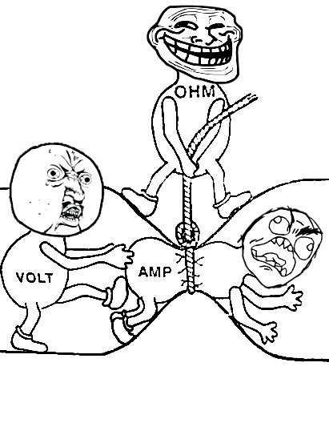 --- # Introduction to Electronics ## Voltage, Current, Resistance 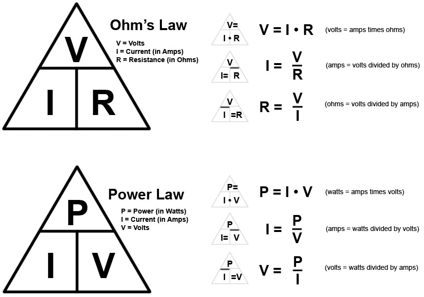 --- # Introduction to Electronics ## Voltage, Current, Resistance <div style="position:relative;width:100%;height:0;"> <iframe width="560" height="315" src="https://www.youtube.com/embed/8jB6hDUqN0Y" title="YouTube video player" frameborder="0" allow="accelerometer; autoplay; clipboard-write; encrypted-media; gyroscope; picture-in-picture" allowfullscreen></iframe> </div> --- # Introduction to Electronics ## Serial & Parrallel <img class="full-width" src="https://qph.fs.quoracdn.net/main-qimg-2c784a9d2fd35a317f6c3cb363bdfa19" alt=""> --- # Introduction to Electronics 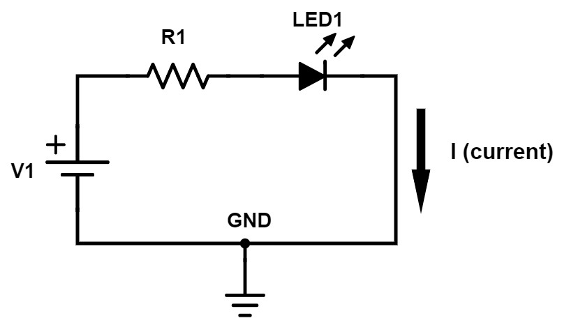 --- # Introduction to Electronics ## BLINK BLINK: An LED Project 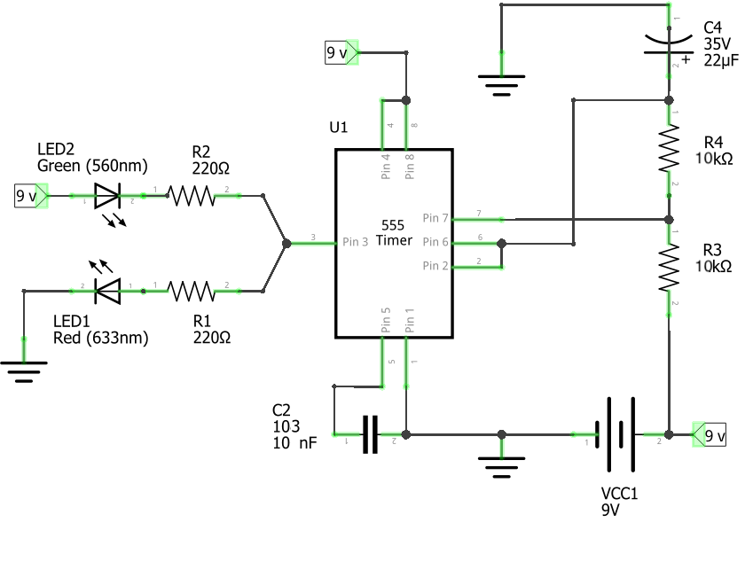 --- # Introduction to Electronics ## How to Read a Schematics - Wires <img src="https://www.circuitbasics.com/wp-content/uploads/2020/05/How-to-Read-Schematics-trace-junction.png" alt=""> <img src="https://www.circuitbasics.com/wp-content/uploads/2020/05/How-to-Read-Schematics-not-connected-wire.png" alt=""> - [More](https://www.circuitbasics.com/how-to-read-schematics/) --- # Introduction to Electronics ## BLINK BLINK: An LED Project <img src="https://miro.medium.com/max/1400/1*9X3ljDyNgry5Huf9lO_ONg.png" class="full-width" alt=""> --- # Introduction to Electronics ## Understanding Breadboard <img src="images/breadboard.jpeg" style="max-width:300px;"alt=""> <br> <img style="max-width:300px;" src="https://iopn.library.illinois.edu/pressbooks/demystifyingtechnology/wp-content/uploads/sites/7/2020/07/BreadboardImagesUncovered-1.jpg" alt=""> --- # Introduction to Electronics ## Components and their Symbols - Resistor (US/Internation, Variable, Potentiometer) - Capacitor (Non-polarized, polarized) - Switches + Buttons - Power supplies - Diodes (Basic Diode, LED, Photodiode, Z-Diode, ...) - Basic Transistor (NPN, PNP) - Metal Oxide Field-Effect Transistors: MOSFET (N-Channel, P-Channel) - Actuators (Motors, Speakers) - Connectors (Barrel Jack, 6-Pin-Connectors, ...) - Integrated Circuits (Motor Drivers, ...) - Sensors --- # Introduction to Electronics ## Components and their Symbols - LED: Light-emitting Diode 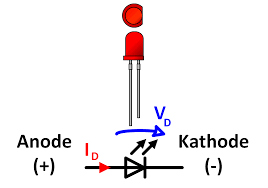 --- # Introduction to Electronics ## Components and their Symbols - Resistor 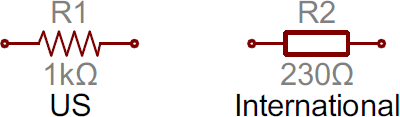 <br> <br> <div class="img-c"> 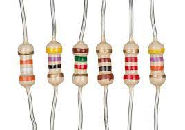 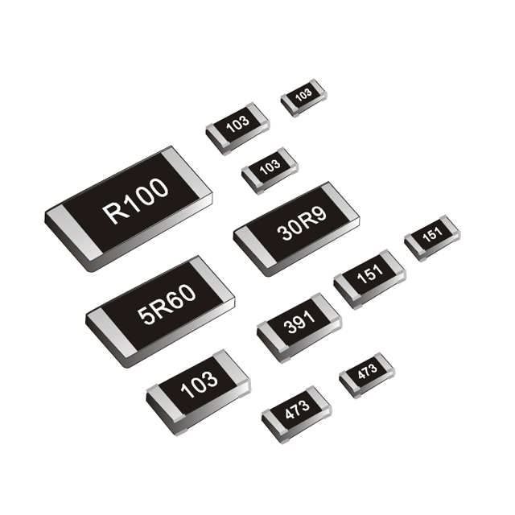 </div> --- # Introduction to Electronics ## Components and their Symbols Resistor Value: <div class="img-c"> <img src="images/r-farbcode.png" alt=""> <img src="https://cdn.sparkfun.com/assets/learn_tutorials/1/01_Multimeter_Tutorial-06.jpg" alt=""> </div> --- # Introduction to Electronics ## Components and their Symbols - Variable Resistor / Potentiometer 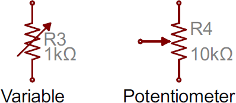 <br> 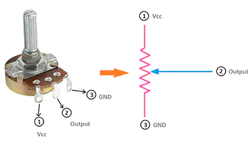 --- # Introduction to Electronics ## Components and their Symbols - Linear and logarithmic potentiometers 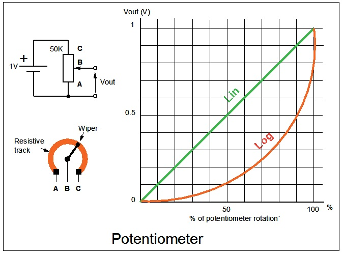 --- # Introduction to Electronics ## Components and their Symbols - Photoresistor - Thermal resistor <div class="img-c"> 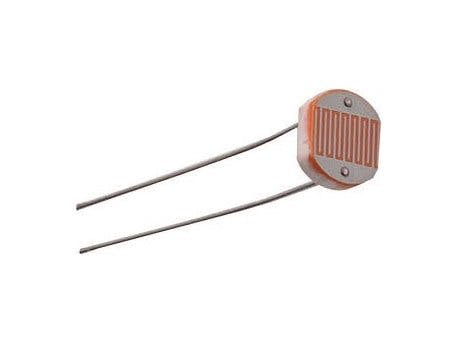 <img src="https://m.media-amazon.com/images/I/41K+sFVcM9L.jpg" alt=""> </div> --- # Introduction to Electronics ## Components and their Symbols - Capacitor (Farad: pF, nF, 𝛍F) - Value: 103 = 10,000 pF = 10nF 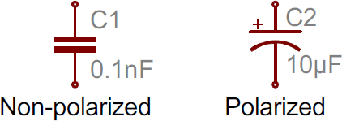 <br> <br> <img src="images/img-c.jpg" class="full-width" style="width:25vw" alt=""> --- # Introduction to Electronics ## Components and their Symbols - Switches (SPST: Single Pole Single Throw) <div class="img-c"> 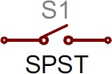 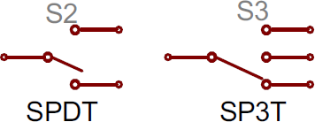 </div> 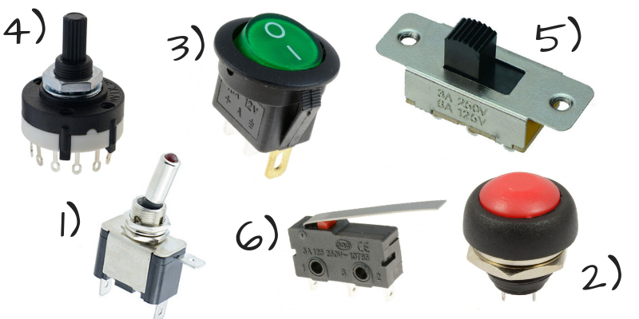 --- # Introduction to Electronics ## Components and their Symbols - Buttons <div class="img-c"> <img src="https://raw.githubusercontent.com/sszczep/kicad-libraries/media/SYMBOL-CherryMX.jpg" alt=""> <img src="https://kicad-info.s3.dualstack.us-west-2.amazonaws.com/original/3X/3/9/39545721da73a40947053f1fcdec8a644d915a5c.png" alt=""> <img src="https://kicad-info.s3.dualstack.us-west-2.amazonaws.com/original/2X/c/ca79f7a18a00a42eeebb77ba1aa7e3014d4bfd57.png" alt=""> </div> <img src="https://cdn.sparkfun.com/assets/d/7/f/d/b/517ebaf2ce395f1f18000002.jpg" alt=""> --- # Introduction to Electronics ## Components and their Symbols - Power Supply 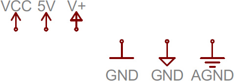 <div class="img-c"> 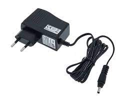 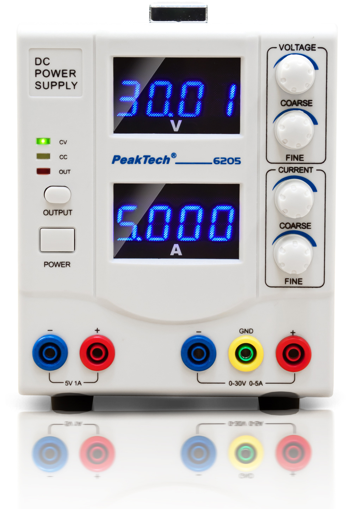 <img src="https://c8.alamy.com/comp/2EMCPK6/batteries-accumulators-and-button-cells-vector-set-realistic-primary-batteries-of-different-types-3d-alkaline-cylinder-accumulator-and-coin-cells-2EMCPK6.jpg" alt=""> </div> --- # Introduction to Electronics ## Components and their Symbols - ICs (Integrated Circuits) <div class="img-c"> <img src="https://www.circuitbasics.com/wp-content/uploads/2020/05/How-to-Read-Electrical-Schematics-555-Timer-Schematic-Symbol-610x711.png" style="height:200px;" alt=""> <img src="https://www.circuitbasics.com/wp-content/uploads/2020/05/How-to-Read-Schematics-555-Timer-Pin-Diagram.jpg" style="height:200px;" alt=""> </div> --- # Introduction to Electronics ## Datasheet 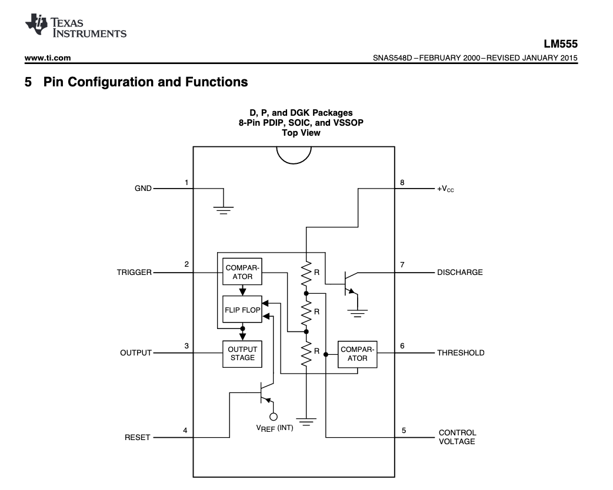 - [datasheet for 555 timer](https://www.ti.com/lit/ds/symlink/lm555.pdf) - [calculator](https://www.digikey.com/en/resources/conversion-calculators/conversion-calculator-555-timer) --- # Introduction to Electronics ## The Art of Debugging Circuits - Is the power supply on? - Did I accidentally mix up the pins for V+ and V-? - Are everything properly grounded? - Are there any loose Wires? - Are all the components properly plugged into the breadboard? - Did I mix up the direction/legs of a component?(+/-) - Are there any broken parts/wires/breadboard? - Are my components in correct value? (resistors and capacitors) - Is there a short circuit somewhere? - Multimeter is your best friend: continuous Mode - Ultimate Solution: rebuild everything! - [full pdf](https://www.google.com/url?sa=t&rct=j&q=&esrc=s&source=web&cd=&cad=rja&uact=8&ved=2ahUKEwjm_N-8pbT3AhWDGuwKHSRMAHUQFnoECEMQAQ&url=https%3A%2F%2Fweb.mit.edu%2F6.101%2Fwww%2Freference%2FTheArtofDebuggingCircuits.pdf&usg=AOvVaw2r94U3fed3ILx_-C6cWOix) --- # Introduction to Electronics ## More? - Add a switch/button - Change the blinking frequency of the circuit - Add a potentiometer or a photoresistor --- # Introduction to Electronics ## Transistors - Bipolar Junction Transistors (BJT) - NPN(Negative-Positive-Negative) & PNP - B - Base; E – Emitter; C – Collector <img src="https://shoptransmitter.com/product_images/uploaded_images/pnp-npn-transistor.png" class="full-width" alt=""> - MOSFET --- # Introduction to Electronics ## Transistors or Relays - Transistors: smaller, faster, silent - Relays: physical switch, complete electrical isolation, reliable, higher Voltage and Current 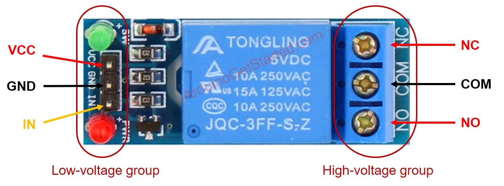 --- # Introduction to Electronics ## Motors 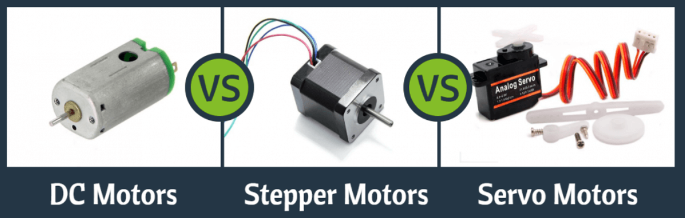 --- # Introduction to Electronics ## Sensors 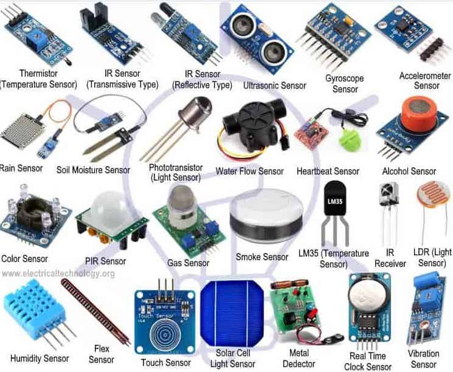 --- # Introduction to Electronics ## Lunch Break! --- # Introduction to Electronics ## From Breadboard to Prototype <div class="img-c"> <img src="https://preview.redd.it/geo6fw85xic11.jpg?auto=webp&s=40e6167adf13992b6578914a9a76a240e583d5fa" style="height:200px;" alt=""> <img src="https://i2.wp.com/www.SDMakersGuild.org/wp-content/uploads/2015/05/FreeformSMDlittlewire.jpg?w=584" style="height:200px;" alt=""> </div> <br> <img src="https://media.elektor.de/media/catalog/product/cache/81e8af4009b65a0e5c366ff25faf04a4/1/8/18559_-_160548-51.jpg" style="height:200px;" alt=""> --- # Introduction to Electronics - Connectors <div class="img-c"> <img src="https://cdn11.bigcommerce.com/s-7gavg/images/stencil/1280x1280/products/173/3838/Pmod_CON1__87280.1533765612.png?c=2" style="width:200px;"alt=""> <img src="https://cdn.sparkfun.com/assets/2/6/0/7/f/51141810ce395f4d7e000007.jpg" style="width:200px;" alt=""> <img src="https://www.12voltplanet.co.uk/user/products/large/Wago-221-Compact-Splicing-Connector-3-Way-0.25-6mm[2].png" style="width:200px;" alt=""> </div> <div class="img-c"> <img src="https://m.media-amazon.com/images/I/412eGohKE4L._AC_.jpg" style="width:200px;" alt=""> <img src="https://cdn-reichelt.de/bilder/web/xxl_ws/C130/GS_16.png" style="width:200px;" alt=""> </div> - [More about Connectors](https://learn.sparkfun.com/tutorials/connector-basics/all) --- # Introduction to Electronics ## Tools - Laboratory Power Supply - Multimeter - Breadboard + Jumper Wires - Knipex, Wire Stripper, Cutter tools - Solder Iron or a solder station + Solder wire - Solder vacuum pump/Solder wick - Cleaning sponge - Helping Hand - Tweezers - Rosin paste flux - Precision Screwdriver Set - Caliper (Schieblehre) - Heat shrinking tube + hot air gun --- # Introduction to Electronics ## Tools Where can I get access to these tools? - PEW: https://github.com/digitalmediabremen/pew <img src="https://raw.githubusercontent.com/digitalmediabremen/pew/main/assets/images/pew_tools2.jpg" alt=""> - Physical Computing Library: https://pcl.digitalmedia-bremen.de/ - Electronic Workshop: 2.12.040 / 2.12.050 --- # Introduction to Electronics ## Soldering Tips - https://www.makerspaces.com/how-to-solder/ <img src="https://www.makerspaces.com/wp-content/uploads/2017/04/how-to-solder-reference-guide-section-1.jpg" alt=""> --- # Introduction to Electronics ## Soldering Tips <iframe width="560" height="315" src="https://www.youtube.com/embed/kTURB6QboNY" title="YouTube video player" frameborder="0" allow="accelerometer; autoplay; clipboard-write; encrypted-media; gyroscope; picture-in-picture" allowfullscreen></iframe> --- # Introduction to Electronics ## Perfboard Soldering <iframe width="560" height="315" src="https://www.youtube.com/embed/l9Kbr8cPqOE" title="YouTube video player" frameborder="0" allow="accelerometer; autoplay; clipboard-write; encrypted-media; gyroscope; picture-in-picture" allowfullscreen></iframe> --- # Introduction to Electronics ## Security Tips - Never work on a circuit while power is applied (including usb power connected to your computer!) - If you smell anything burning/see any smoke, immediately disconnect the power and examine your circuit to find out what went wrong. - Keep your work area dry and clean. - Be especially careful when you solder and what are close to a solering iron. --- ---